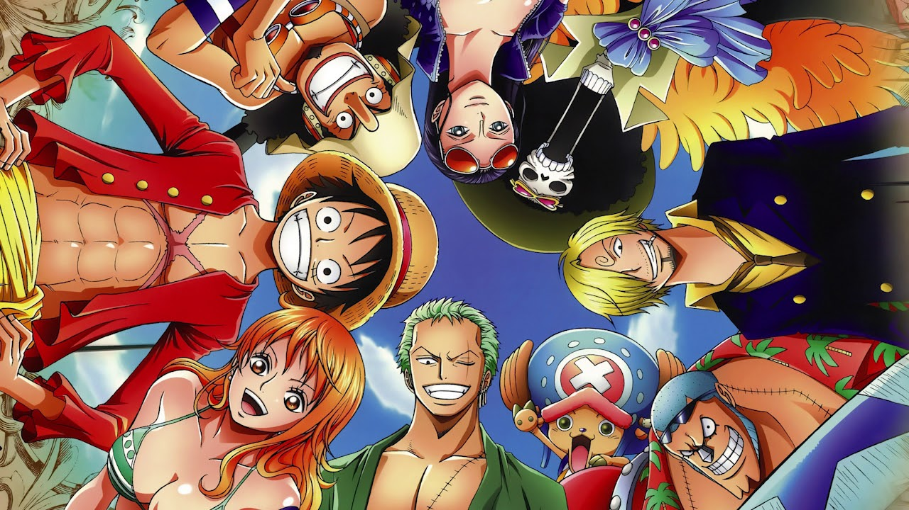

One Piece Opening 1 - We Are!

Arittakeno yume o kakiatsume
sagashi mono sagashini yuku no sa ONE PIECE
rashinban nante jyutai no moto
netsu ni ukasare kaji o toru no sa
HOKORI ka butteta takara no chizu mo
tashikameta no nara densetsu jyanai!
kojin teki na arashi wa dareka no
BIORHYTHM nokkatte
omoi sugose ba ii
arittakeno yume o kakiatsume
sagashi mono sagashini yuku no sa
POCKET no COIN, soreto
YOU WANNA BE MY FRIEND?
WE ARE, WE ARE ON THE CRUISE! WE ARE!
zembu mani ukete shinji chattemo
kata o osarete iippo LEAD sa
kondo aetanara hanasu tsumorisa
sore kara no koto to kore kara no koto
tsumari itsumo PINCH wa dareka ni
APPEAL dekiru ii CHANCE
ji ishiki kajyoo ni!
shimittareta yoru o buttobase!
takara bako ni KYOUMI wa nai kedo
POCKET ni ROMAN, soreto
YOU WANNA BE MY FRIEND?
WE ARE, WE ARE ON THE CRUISE! WE ARE!
arittakeno yume o kakiatsume
sagashi mono sagashini yuku no sa
POCKET no COIN, soreto
YOU WANNA BE MY FRIEND?
WE ARE, WE ARE ON THE CRUISE! WE ARE!
WE ARE! WE ARE!